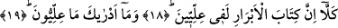
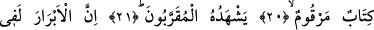
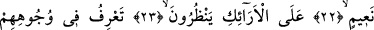
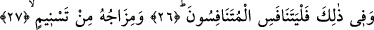
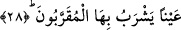

İLLİYYUN NEDİR
BİLİR MİSİN?
18. Hayır! Andolsun iyilerin kitabı İlliyyûn’dadır.
19. İlliyyûn nedir, bilir misin?
20. (O İlliyyûn’daki kitap) içinde ameller kaydedilmiş bir kitaptır.
21. O kitabı, Allah’a yakın olanlar görür.
22. İyiler kesinkes Cennettedir.
23. Onlar orada koltuklar üzerinde etrafa bakarlar.
24. Onların yüzünde nimetlerin sevincini görürsün.
25. Kendilerine mühürlü hâlis bir içki sunulur.
26. Onun içiminin sonunda misk kokusu vardır. İşte yarışanlar ancak onda
yarışsınlar.
27. Karışımı Tesnîm’dendir.
28. (O Tesnîm Allah’a) yakın olanların içecekleri bir kaynaktır.
“Hayır!” Bu ifâde, zecr/caydırmanın ardından bir caydırma daha getirdikten sonra
red’/sakındırmanın ardından ikinci bir sakındırma ve red içindir. “İyilerin kitabı” yâni
onların yazılmış amelleri “İlliyyunda’dır.”
Âyette “kitap” kelimesinin “yazılmış ameller” şeklinde tefsir edilmesi, bu kelimenin
ifâdede mukadder bir muzafa masdar olması kabulüne göredir. İlliyyûn’dan maksad ise
iyilerin amellerinin tümünü içinde toplayan divan demektir. Şu halde illiyyûn, insan ve
cin âlemi olmak üzere her iki âlemin sâlih kişilerinin ve meleklerin işledikleri
amellerin yazılmış olduğu hayır defteri anlamında özel bir isimdir. Kelime “illiyyun”
kelimesinin çoğulu olup mubalağa ifâde eder. Söz konusu deftere illiyyûn denilmesi,
defterin ya Cennette en yüce derecelere yükselmesi sebebiyledir. Ya da kerrubiyyûnun
sâkin olduğu yedinci semaya -kendisine bir şeref vermek ve ta’zim etmek için-